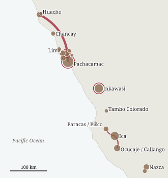
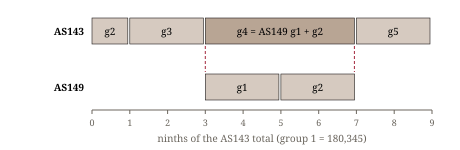
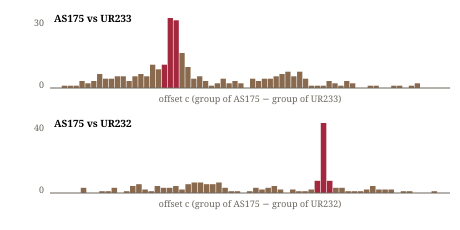
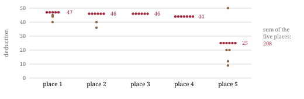

Since Locke (1912) the decimal knot notation of Inka khipus has been readable: long knots with 2–9 turns or a figure-eight knot give the units, clusters of single knots give the higher registers, and position along the pendant gives the place value. What the numbers counted, and how records related to each other, is largely unknown. The Aschers' databook (Ascher and Ascher 1978) documents many sums inside individual khipus. Cross-khipu relations have been shown for a few archives: matching and hierarchical khipus at Puruchuco (Urton and Brezine 2005), pairs of duplicate accounts (Urton 2005, 2014), the storehouse archive of Inkawasi with its fixed deductions (Urton and Chu 2015, 2019), a numerical connection between AS069 and AS070 (Thompson 2024), and a partial copy of a Lima khipu in Gothenburg (Chirinos Rivera 2010).
Such relations are the most direct evidence we have of khipu accounting as a practice: who kept totals, who kept details, and what was copied. Here we search for them across the whole open corpus with explicit statistical baselines. The emphasis is on relations whose numerical evidence does not depend on interpretation.
Data. Open Khipu Repository (OKR, SQLite release, 609 khipus; Zenodo 10.5281/zenodo.18025748), the Khipu Field Guide companion data (KFG, 678 khipus; Khosla and Medrano 2023, Zenodo 10.5281/zenodo.8125718), and 19 khipus added to the OKR after 2017. A cord's value is the sum of its knot values; unless stated otherwise we use the pendant's own value without subsidiaries, since across 422 khipus group sums hold on own values (z = 4.4 on an offset baseline) and fail when subsidiaries are added or subtracted. Group boundaries are the recorded ones, which follow physical spacing on the primary cord. Physical attributes (termination, length, colour, knot direction) come from the OKR and KFG records; published knot records were checked in the Aschers' databook where relevant.
Detectors. (a) Vector sums: every group of every khipu against position-wise sums of 2–10 consecutive groups, or 2–8 groups at a stride of 2–4, of every other khipu. (b) Group-diagonal alignment: for two khipus, the number of equal values ≥ 10 between group j of one and group j + c of the other, allowing one extra position in the longer group, summed along each offset c. (c) Lot matching: whole groups equal within max(1, 2%) with at least half of the positions exact. (d) Subsidiary totals: lists of subsidiary values of one pendant against chains of group sums of other khipus.
Baselines. Value shuffling is too permissive for sums, because it destroys the group structure that sums depend on. We therefore use the offset baseline: the same search with targets shifted by ±d (typically d = 1–30), which keeps every structural property of the data. For alignments we compare the aligning offset with all other offsets and with permutations of group order. Pairs with the same museum number are treated as duplicate recordings and excluded.
Validation. Without being told where to look, the detectors recover Thompson's AS069/AS070 relation, the Lima–Gothenburg copy (Chirinos Rivera 2010), the Inkawasi matching pairs and their fixed deductions of 10, 15 and 47 (Urton and Chu 2015; fixed deductions occur nowhere else in the corpus), known duplicate recordings, the matching pairs of Puruchuco (UR066 ~ UR067; UR064 ~ UR068, matching since Mackey 1970), and single pendants equal to the sum of the preceding group (28 cases against 0.6 expected). The hierarchy of sums that Urton and Brezine (2005) report among the Puruchuco khipus we could not rebuild from the values alone. Table 1 lists the relations reported here; Figure 1 shows where the linked khipus were found.
| § | Relation | Khipus | Main evidence |
|---|---|---|---|
| 3.1 | One allocation on three khipus (Berlin, Ica 1907) | AS143, AS149, AS179 | only exact cross-khipu vector sum; offset baseline 0–2, small values only |
| 3.2 | Detail copy without the totals (Pachacamac → Huacho) | AS175 → UR233 + UR232 | diagonal alignment z = 6.4 and 19.5; permutation p ≤ 0.003 |
| 3.3 | Extract plus totals of a third khipu | AS118 ← UR218, AS125 | two groups cord for cord; only AS125 of 696 matches > 1 subsidiary |
| 3.4 | Two halves of one 14-unit account (Pachacamac → Huacho, Basel) | UR212 + AS131 → MM008–MM016 | others ≤ 4 cords; same unit in 3 of 3 fragments, p ≈ 0.005 |
| 3.5 | Fourteen-unit frame in Gretzer's batch (suggestive) | UR212, AS131, AS170, UR199 | binomial P ≈ 0.0005 (0.04 without the two that prompted it) |
| 3.6 | Empty slots filled in a copy; a totals-only bundle (Inkawasi) | UR255 ~ UR267A, UR273A/B ~ UR274A/B | about 1 in 3,900; p ≈ 10−5 and 3 × 10−4, totals in the same order |
| 3.7 | Five supply streams, each with its own deduction; stream 1 recorded in full elsewhere (Inkawasi) | UR269 ← UR275 | place-set deduction p ≈ 0.0005; block b = UR275 entry b + 15, p ≈ 0.0002 |
| 3.8 | Totals-only record of a summary part | AS003 ← AS215 | six sums and their total 76 |
| 3.9 | Separate cord in one copy = subsidiary in the other | UR270 → UR278, UR053C → UR053B | 35 fields against ≤ 18 in 2,000 shuffles (UR053) |
Table 1. Relations between khipus reported in this paper. Published relations recovered by the detectors (validation) are not listed.

AS143 (KH0159, VA47096, Ica), AS149 (KH0165, VA44866C, Ocucaje) and AS179 (KH0196, VA47123, Ica) came to the Berlin museum in the same 1907 acquisition. Group 1 of AS143 is its total (180,345); groups 2–5 are the parts, as the Aschers noted. Group 4 of AS143 equals the sum of groups 1 and 2 of AS149 in all five positions:
| Position | 1 | 2 | 3 | 4 | 5 |
|---|---|---|---|---|---|
| AS149 g1 | 8,653 | 4,049 | 20,640 | 660 | 4,741 |
| AS149 g2 | 8,783 | 4,171 | 21,243 | 690 | 4,787 |
| AS143 g4 | 17,436 | 8,220 | 41,883 | 1,350 | 9,528 |

Among all cross-khipu comparisons in the corpus (detector a), this is the only exact vector sum; with targets shifted by 1–7 the same scan finds 0–2, all on small values. It persists when single pendants are merged into adjacent groups.
The Aschers (1981, p. 146) discuss AS143 and AS149 together but found no confirmed relation; Chirinos Rivera (2010, pp. 286–293) already computed the proportions of the AS143 groups to the total (11.0, 22.7, 43.6, 22.7%, i.e. about 1, 2, 4 and 2 ninths) and expressed them as parts of 600; he treats AS143 alone, and AS149 does not appear in his book. The new elements here are the link to AS149 and AS179 and the reading as ninths, in which the 4/9 group of AS143 is the sum of the two 2/9 shares recorded on AS149. On our reading the uniform ratios within each khipu follow from one quantity of fixed composition apportioned to five recipients, one with a half share, and recorded at three levels on three khipus.
AS175 (UR1175, KH0192, VA42518, Pachacamac, 1907) has 45 groups of five pendants in three parts; according to the Aschers (Databook, pp. 1073–1074) part 2 (groups 22–24) is related to the sums of the seven sets of part 3. UR233 and UR232 (KH0470, KH0469, VA63038b, Huacho) are two khipus whose primary cords are spliced together (KFG note on UR232). UR233 repeats part 1 of AS175 (groups 1–21; three AS175 groups appear split in two) and UR232 repeats part 3 (groups 25–45), group for group. Along the aligning offset there are 29 and 40 equal values ≥ 10, against 3.2 ± 4.0 and 2.1 ± 1.9 at all other offsets (z = 6.4 and 19.5); permuting group order never reaches the real score (p ≤ 0.003). Of the comparable values, 85 of 100 (UR233) and 73 of 105 (UR232) are equal, and most others differ by one knot.

The copy fits the totals better than the original. Summing part 3 as recorded on AS175 reproduces 5 of the 15 part-2 values exactly (6 allowing a one-knot difference; the Aschers, using a one-digit tolerance, count 8); summing the same groups as recorded on UR232 reproduces 8 exactly (10 with one-knot tolerance). Taking each of the seven addends from either version, 10 of 15 totals can be met exactly (targets shifted by ±1…±20: 1.5 on average, at most 5). In five totals the Huacho values are required where the versions differ; for instance the total 335 needs 18 (UR232) where AS175 has 108 (group 27, position 3). One total requires the AS175 value. We cannot tell from the records whether the differing AS175 values were changed later or misread.
AS118 (UR1118, KH0132, VA42601) has three groups. Its groups 2 and 3 (seven white pendants each; group 2 "actually on a subsidiary main cord" according to Urton's note in the KFG record) repeat groups 2 and 3 of UR218 (KH0456, VA42559) cord for cord, including the number of knots on each cord: [620, 470, 528, 935/932, 474, 319, 453] and [492, 663, 252, 654, 423, 433, 275]. Five cords of group 3 are broken on AS118 and keep only their upper registers (the Aschers record "6(5+)?" and "4??" where UR218 has 663 and 423); on UR218 they are intact, and cord lengths differ, so these are two objects. UR218 is not the copy that Urton (2014, p. 15) pairs with UR1144: his six Pachacamac pairs are similar in cord count and colour, and their values agree only at chance level in our data.
The first pendant of AS118 carries no knots and five subsidiaries, 2696, 13182, 14658, 11522 and 8565. The Aschers (Databook, pp. 791–793) note that this cord "is not a regular pendant attachment": its twisted end runs through the strands of the main cord, so it was attached before it was twisted and knotted. Subsidiaries 2–5 follow, in order, the group sums of AS125 (KH0140, VA42670), 13676, 14658, 11444 and 8584:
Against the group-sum chains of all 696 other khipus (best offset, 1% tolerance), only AS125 matches more than one of the five values; with the values shifted by ±100…±300 no khipu matches three.
Object IVc.366.03 of the Museum der Kulturen Basel is a cloth onto which ten fragmentary khipus and many loose cords were sewn in 1924 under Nordenskiöld. According to the museum's 1910 report (Medrano 2022), the cords come from a burial ground near Huacho, dug by Arnold Masarey. Six of its ten fragments (OKR MM008, MM009, MM012, MM014, MM015, MM016) repeat runs of two khipus of the Berlin Pachacamac batch: UR212 (VA42508(A), recorded by Urton; 37 of 195 pendants) and AS131 = UR1131 (VA42510, recorded by the Aschers; 25 of 146). Against each of 121 other khipus with ≥ 100 pendants the fragments match at most 4 cords. The longest runs are 13 cords (MM015 = UR212 cords 182–194), 10 (MM016 = UR212 139–148) and 7 (MM008 = UR212 6–12, in a group that opens with 0, 437, 103 as UR212's first group opens with 0, 437, 102). Within each fragment the UR212 and AS131 runs go in opposite directions, and the fragments themselves face both ways. This fits two recorders reading from opposite ends and pieces sewn onto a cloth, so the direction carries no meaning. Values and subsidiaries differ in places, so the Basel cords are a second record, not the same cords. With AS175 → UR233 + UR232 (section 3.2), this is the second case of a Pachacamac account repeated on khipus from Huacho, in a different museum. In the Berlin records all the Pachacamac originals were collected by Wilhelm Gretzer, and the Berlin Huacho khipus by Eduard Gaffron. The Basel fragments are attributed to Gaffron in the OKR, but in the Basel archive to Arnold Masarey. UR212 and AS131 each have 14 main groups (14 and 10 cords), and both divide them into two parts of seven at the same point (AS131 by a larger space, as the Aschers note; UR212 by a single knotless cord). Counting UR212's from its end and AS131's from its start, each of the three fragments that carries both khipus pairs the same unit (1, 4, 14; by chance p ≈ (1/14)² ≈ 0.005). The unit totals of the two Berlin khipus are uncorrelated (ρ = 0.19), so they record different categories of the same 14 units, which the Huacho khipu set side by side, 24 cords per unit. It is the reverse of AS175, whose single account is split over two Huacho khipus. Suggestively, where the Berlin khipus leave a colour-marked cord knotless (AS131's dark seventh cord, UR212's third or fourth), the Basel copy carries a value (3 of 3), while other knotless cords stay knotless: the same pattern of empty slot and filled copy as at Inkawasi. In the five units that the fragments carry whole, 41 values agree and 5 differ (all in unit 14); of the five Berlin zeros, the three filled on the Basel copy are exactly the three colour-marked ones (1 in 10 by chance). The other fragments of the cloth (MM010, MM011, MM013, MM017) cannot be placed with confidence.
Fourteen main groups are rare in the corpus (1.6% of khipus outside the Berlin “Pachacamac” batch bought from Wilhelm Gretzer) but occur on 4 of the 23 digitized khipus of that batch: UR212, AS131, AS170 and UR199 (binomial P ≈ 0.0005; P ≈ 0.04 if UR212 and AS131, which prompted the question, are left out). The Berlin catalogue records (museum-digital) describe three more khipus of the batch that are not digitized: VA 42513 (14 groups of 13 pendants), VA 42537 (14 × 9) and VA 42532 (7 × A, 7 × B, 7 × A, 7 × B). AS131, UR212 and AS170 divide their units 7 + 7 at the same place, each marked differently: a larger space, a single knotless cord, a marker. Equal halves are not a general habit: across 109 OKR khipus with an even number of main groups, the largest space falls in the middle 12.9 times (13.0 expected).
Among 154 khipus with regular groups (≥ 5 groups of equal length ≥ 3), 11 have a position where the pendant is intact but knotless in ≥ 80% of the groups (3.0 expected when values are shuffled within groups; at most 6 in 200 shuffles). Five more khipus have regular groups and no knots at all. In the Inkawasi pair UR255 ~ UR267A each group records a gross value, the fixed deduction 15 and the net value (gross = 15 + net), in the orders [gross, net, 15] and [gross, 15, net]. Of 19 groups that can be paired, UR255 leaves the net pendant empty in the first 12 (11 intact, 34–45 cm) and fills it with the same value as UR267A in 5 of the last 6 (about 1 in 3,900 for a split this clean under random placement). The khipu tied to it, UR256, shows the same order: in groups of the form [gross, slot, 10, …] the slot is empty in the first 6 and filled in the next 12 (about 1 in 18,600). A second pair, UR273B ~ UR274B (both from unit 20N), shares six deposit totals (0.5 expected; p ≈ 10−5): UR273B records mostly the totals only, with the other pendants of each group empty and often intact, while UR274B records the same deposits with their deduction (10 or 17) and breakdown. The other two khipus of the same bundles repeat this: UR273A, whose groups are likewise mostly a total followed by empty pendants, shares four totals with UR274A (891, 453, 448, 448; 0.3 expected, p ≈ 3 × 10−4), where three of them stand as [total, empty, 30] with UR274A's fixed deduction of 30. In both pairs the shared totals come in the same order on the two khipus (1 in 12 and 1 in 720 by chance; 448 occurs twice), so the bundle UR273A + UR273B is a totals-only record of the bundle UR274A + UR274B. In all three pairs the copy lies in a different bundle from its counterpart (UR255 + UR256 against UR267A + UR267B; UR273A + UR273B against UR274A + UR274B). Urton and Chu (2015, Appendix I) note blanks on UR273A and UR273B and relate UR273B to UR266 and UR275; in the OKR values UR273B shares its totals with UR274B (6, against 0.5 expected), and with neither UR266 nor UR275 (0 each).
Product labels. The OKR records give the excavators' nicknames: “Khipu del Ají” (UR267A/B) and “Khipu del Maní” (UR266, UR268–UR270, all from unit 20N). The fixed deduction follows the product — 15 and 10 on the chili khipus and their copies, 47 only on khipus of the peanut unit (UR266, UR269, UR275) — as Urton and Chu (2019) relate the deductions to the produce. In addition, a needlework bundle with a red tassel at the start of the primary cord occurs on two khipus of the archive, UR266 and UR268, both peanut khipus (2 of 4 against 0 of 25; p ≈ 0.015). Colour does not mark the product: the same chili deposits are recorded in light brown on one bundle and in white on the other.
A deduction set by the place of the record. UR269 is laid out in blocks of about five records [gross, net, deduction] separated by single empty cords. Its deduction is not one constant but follows the place of the record in its block: 47, 46, 46, 44, 25. 33 of 43 readable deductions equal the value of their place, against 17 when records are shuffled within blocks (p ≈ 0.0005). It is not a percentage (places 2–4 hold the largest amounts, place 5 the smallest), so each block reads as one round of five deliveries in a fixed order, each with its own fixed deduction. No other Inkawasi khipu shows this (p > 0.8). Urton and Chu (2015, 2019) list UR269 among the khipus without a repeating value and register only the fixed values 10, 15, 47 and 208. Their deduction of about 2% of the average deposit does not hold within UR269: 1.9% in places 2–4, 3.0% in place 1 and 4.4% in place 5. The five place deductions add up to 208, the fixed deduction of UR268 from the same room, and a complete UR269 block (about 7,500–10,400) is of the size of a UR268 deposit; no block total, however, equals a UR268 deposit, so this remains a coincidence to be tested.
Five supply streams. The place-1 records — those with the deduction 47 — are deliveries also recorded on UR275, whose every entry has the fixed deduction 47, and on its copy UR266 (the pair UR266 ~ UR275 is listed as matching by Urton and Chu 2015, Appendix I). Of the ten readable place-1 records of UR269, five have their gross or net among the values of UR275 (0.5 expected with the values shifted by ±1…±10); of the 28 records in places 2–4, two do (0.7 expected). The five lie at one offset: block b of UR269 holds entry b + 15 of UR275 (blocks 2–5 and 9 = entries 17–20 and 24), and no permutation of the block order in 5,000 reaches five (at most four; p ≈ 0.0002). Where the two records differ, UR269 keeps the arithmetic and UR275 slips: entry 19 of UR275 reads [1825, 47, 1780], block 4 of UR269 [1827, 1780, 47], and 1827 = 1780 + 47. A block of UR269 is therefore one round of deliveries from five streams in a fixed order, each stream with its own fixed deduction, and UR275 is the full record of the first stream. The records of places 2–5 are found on no other digitized khipu of the archive.

AS215 (Hood Museum, Nazca) has, under a top cord, a group of six pendants (the Aschers' part II, Databook pp. 127–132) whose values, 4, 14, 7, 37, 10 and 4, are each the sum over the four groups of its part III; the top cord, 76, is their total. AS003 (Heye 17/8827, provenance unknown) has seven cords and repeats exactly this summary with its total, in reverse cord order, with the total after the group on both khipus. It is a second record of the totals only, after UR273B at Inkawasi (§3.6). The Aschers' entry for AS215 does not mention AS003. A corpus-wide search for cords of one khipu that repeat the group totals or column sums of another (summaries.py) finds no excess over the offset baseline beyond AS003 and AS118 (§3.3).
In two independent cases a cord that stands as a separate pendant in one copy is a subsidiary in the other: UR270 → UR278 at Inkawasi, and UR053C → UR053B in the Waterfall set, where 35 fields agree against at most 18 in 2,000 shuffles of the C records. Chirinos Rivera (2010) noted that UR053B and UR053C are near-duplicates; the folding rule is our observation. Copies, in other words, keep the values but not necessarily the cord hierarchy. Across 21 pairs of copies, the ends of matching runs fall on group boundaries in 38% of cases against 46% expected: copies add or drop cords within groups (the extra empty pendant at Huacho, filled slots), so group structure is not a reliable signature of copying.
UR297 (PC.WBC.2016.072; 438 pendants, 623 cords) and UR298 (PC.WBC.2016.071; 203 pendants, 285 cords), given to Dumbarton Oaks by Bill Conklin, exist in the OKR only as scans of Urton's handwritten record sheets. We transcribed all 65 pages. 74 of the 78 group totals that Urton noted on the sheets equal ours. UR297 has 41 groups, mostly of ten cords plus one summary cord pulled up like a top cord. Neither khipu is linked to any other in the corpus. The transcriptions are part of the companion data (§5).
The relations show several ways in which one account was spread over several khipus. At Berlin/Ica a total, its shares and their subdivisions were recorded on different khipus, and one khipu (AS143) keeps the sum of two shares that another (AS149) holds separately. At Pachacamac and Huacho the detailed parts of an account were copied onto a separate pair of khipus, without the summary part, with an empty pendant added to every group, and joined into one bundle. AS118 combines an extract of one khipu (UR218) with the group totals of another (AS125). Together with the Lima–Gothenburg copy, which holds exactly one branch of its original (a subtotal and its three addends), the pattern is consistent: copies are extracts of details, while totals stay with the fuller record. The Basel fragments show the converse operation, two categories of the same fourteen units set side by side; and AS003 and the bundle UR273A + UR273B show that a record of the totals alone could also be kept separately. UR269 shows a third operation: deliveries from five streams interleaved round by round on one khipu, each stream keeping its own fixed deduction, while one of the streams is also recorded in full on its own khipu (UR275).
Provenance. Both Pachacamac → Huacho relations have their originals in the batch that Berlin bought from Wilhelm Gretzer in 1906–1907, and their copies among khipus from Huacho, collected by Eduard Gaffron (Berlin) or attributed to Gaffron and to Arnold Masarey (Basel). Gretzer bought mostly from huaqueros and most of his objects are labelled Pachacamac. Either accounts moved about 150 km between the two places, or some of Gretzer's “Pachacamac” khipus came from the Huaura valley. The numbers cannot decide this; museum archives might.
This fits colonial testimony. In the Visita of Chucuito (1567), as summarized by Chirinos Rivera (2010, pp. 88–89), distribution khipus for tribute in cloth, labour and silver existed in several copies, and each subdivision knew, in separate interviews, what fell to it. It also fits the storehouse accounting of Inkawasi (Urton and Chu 2015), where two copies of the same deposits were kept, and where one copy leaves the net value empty in its earlier entries.
The main limitation is that all evidence comes from recordings, some decades old, of fragile objects. Several readings would be settled on the objects in Berlin: AS125 group 4 cord 1 and group 3 cord 1; the AS175 part-3 cords where AS175 and UR232 differ; the extra pendants and black subsidiaries of UR232/UR233. A radiocarbon date for UR232/UR233 (VA63038; Cherkinsky and Urton 2014) would show whether the Huacho copy is Inka or colonial.
The Khipu Links Atlas (https://khipu-links.vercel.app) presents the corpus and the results of this paper for further work. It has a catalogue of all 699 khipus with cord data, searchable by any of their numbers (investigator, OKR, KFG, museum), a map of find-places with a 3D relief view, a network of the links, a page per finding with its evidence and the scripts that reproduce it, tools to search for a sequence of values across the corpus and to compare two khipus, corpus statistics, the negative results, and a list of checks that only the objects can settle. Each khipu has a 3D model built from the recorded knots (OKR), from our transcriptions (UR297, UR298) or reconstructed from the values where knot positions were not recorded; the model states which. The atlas is built from editable tables (sites, links, findings, proposed corrections) into one SQLite database, so that new readings and links can be added without touching the page code. Relief: Terrain Tiles (AWS Open Data; SRTM, GMTED2010, ETOPO1).
All code (Python, standard library) and derived tables are at https://github.com/VladimirMoor/khipu-links (MIT licence); the main scripts are vecsum.py, lotmatch.py (§3.1), diagscan.py, huacho.py (§3.2), as118.py (§3.3), basel_huacho.py, ur212_as131_units.py, basel_slots.py (§3.4), units14.py, halves.py (§3.5), blanks.py, fillslot.py, paper_extra.py (§3.6), slotded.py, ur269_streams.py (§3.7), summaries.py (§3.8), records.py (§3.9), do_ingest.py, do_check.py (§3.10) and ordered_totals.py, stride_copies.py (§3.11); the figures are drawn by preprint_figs.py, and reproduce.py reruns all of them and checks every number quoted here against their output. The source data are the OKR and KFG releases cited above (both MIT licence). The atlas data, which derive from them, are published with the atlas; third-party publications are not redistributed.
I thank the creators of the Open Khipu Repository, the Khipu Field Guide and the Khipu-Biblio Cross-Reference (K. M. Thompson), whose open data made this work possible. The searches, code, analyses, atlas and much of the text were developed together with an AI model, Claude Opus 5.5 (Anthropic); all results were checked against the source records.
Ascher, M., and R. Ascher. 1978. Code of the Quipu: Databook. Ann Arbor: University of Michigan Press. (Online edition, Cornell University.)
Ascher, M., and R. Ascher. 1981. Code of the Quipu: A Study in Media, Mathematics, and Culture. Ann Arbor: University of Michigan Press.
Cherkinsky, A., and G. Urton. 2014. Radiocarbon chronology of Andean khipus. Open Journal of Archaeometry 2: 5260.
Chirinos Rivera, A. 2010. Quipus del Tahuantinsuyo: curacas, incas y su saber matemático en el siglo XVI. Lima.
FitzPatrick, M. 2025. Primary questions: a survey of Inka-style khipu primary cords. Preprint, doi:10.31235/osf.io/hqkcj_v1.
Hyland, S. 2014. Ply, markedness, and redundancy: new evidence for how Andean khipus encoded information. American Anthropologist 116(3): 643–648.
Hyland, S., G. A. Ware, and M. Clark. 2014. Knot direction in a khipu/alphabetic text from the Central Andes. Latin American Antiquity 25(2): 189–197.
Medrano, M. 2022. The promise of Andean khipu transcriptions: a multi-scale investigation. MPhil thesis, University of St Andrews.
Khosla, A., and M. Medrano. 2023. Khipu Field Guide companion data (data-science khipu article v2.0.0). Zenodo, doi:10.5281/zenodo.8125718.
Locke, L. L. 1912. The ancient quipu, a Peruvian knot record. American Anthropologist 14(2): 325–332.
Open Khipu Repository. Zenodo, doi:10.5281/zenodo.18025748; https://github.com/khipulab/open-khipu-repository.
Thompson, K. M. 2024. A numerical connection between two khipus. Ñawpa Pacha 45(1), doi:10.1080/00776297.2024.2411789.
Thompson, K. M. 2026. Khipu-Biblio Cross-Reference (KBCR), v9. Figshare, doi:10.26188/25661322.
Urton, G. 2005. Khipu archives: duplicate accounts and identity labels in the Inka knotted string records. Latin American Antiquity 16(2): 147–167.
Urton, G. 2014. Quipus de Pachacamac. Lima: Ministerio de Cultura.
Urton, G. 2017. Inka History in Knots: Reading Khipus as Primary Sources. Austin: University of Texas Press.
Urton, G., and C. J. Brezine. 2005. Khipu accounting in ancient Peru. Science 309: 1065–1067.
Urton, G., and A. Chu. 2015. Accounting in the King's Storehouse: the Inkawasi khipu archive. Latin American Antiquity 26(4): 512–529.
Urton, G., and A. Chu. 2019. The invention of taxation in the Inka Empire. Latin American Antiquity 30(1): 1–16.